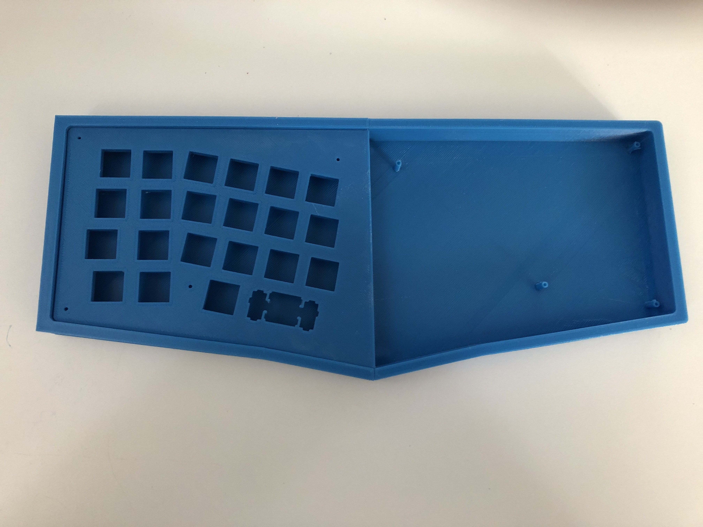

Keyboards
For the last few months I've been really into mechanical keyboards. I've been using mechanical keyboards since like 7th grade, but they've always sucked until now. My first board was an HCman TKL with blue switches I bought off a friend for like $20. It was way better than a membrane board so I used it for a while. Eventually I replaced it with a Razer Blackwidow Elite with orange switches I got for christmas. Do NOT buy this board. The volume wheel broke and would sometimes shoot the volume up to 100%, which wasn't good for my ears. Also the board is way too expensive for what you get, and the typing experience is mediocre. The board I use now is a Keychron C1 with brown switches, modded with PE foam and the tempest tape mod. My biggest regret here was not getting the hot-swap version, because I didn't anticipate caring this much about keyboards back then. It serves me well and for the price it sounds and types very well. I got the version with white LEDs as opposed to the RGB because I'm not really a gamer and I wanted something more simple. I don't regret the choice. I might invest in an enthusiaћt grade board one day, but I don't have the income for that right now. The zoom TKL looks nice and it's not as much as most group buys, and if you have dough then I'd go for that one, but right now I can't justify the purchase. As for my preferences, I like tactile switches (I've tried holy pandas which were nice, I can't afford >$1 per switch though lmao), and TKL layout boards. I could probably use an HHKB layout if I wanted a smaller board, but I have the desk space for TKL and I like the extra keys.
I've also been working on my own custom 3D printed design, loosely based on the C-13X by Flurples. My board is similar in that it's a 3D printed 40% ALICE layout handwired board, but mine keeps the QAZ keys among some other differences. Once I re-calibrate my 3D printer and work out the minute details, I should be done. For the board I got Gateron milky black switches (a cheap, quality, heavy linear switch), and a clone set of GMK modern dolch (I'm not paying GMK prices for this lmao).